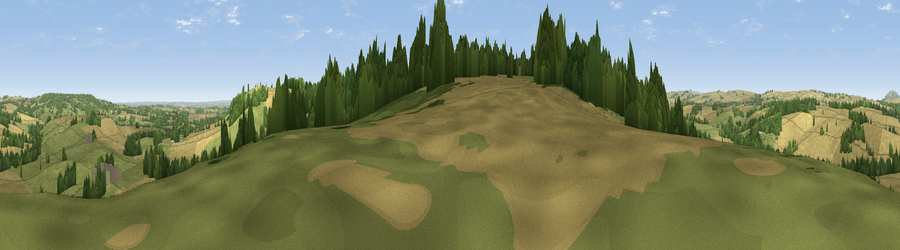

Viewpoint near Monkhopton
#27020 in England · top 68% of its area beats it · near MonkhoptonWhere it is
The exact computed spot (SO 63625 93625). Click the marker for map links.
The view, rendered

A 360° render of this exact spot computed from the terrain model, tree cover and land cover — summer colours, afternoon light, calibrated against photographs of famous viewpoints. Real trees, hedges and buildings will differ in detail.
The panorama
Grey silhouette: terrain skyline in each direction (720 bearings, Earth curvature and refraction included). Dashed green: skyline with trees (+15 m) and buildings (+8 m) as obstacles. Blue strip: how far the ground is visible on each bearing.
Where the view opens
Wedge length = distance to the farthest visible ground on that bearing (vegetation-aware). Rings at 10, 25 and 50 km.
What fills the view
53% cropland · 30% grassland · 16% woodland ·
Angular shares of the visible panorama (visual magnitude), not map area. Landscape diversity 0.45 (0–1 Shannon).
Key numbers
More beautiful places nearby
The staircase of upgrades: each row has a higher view potential than everything closer. Driving times are estimates from straight-line distance, calibrated against real road routing — check an actual route before setting out.
| Place | Direction | Drive | Score |
|---|---|---|---|
| Viewpoint near Monkhopton | E · 1 km | ~3 min | 57.3 |
| Aston Hill | E · 2 km | ~6 min | 60.9 |
| Viewpoint near Monkhopton | E · 3 km | ~8 min | 61.8 |
| Bourton Westwood | NW · 5 km | ~12 min | 64.0 |
| Viewpoint near Bourton | NW · 6 km | ~14 min | 75.2 |
| Viewpoint near Harley | NW · 7 km | ~14 min | 76.8 |
| Viewpoint near Harley | NNW · 7 km | ~14 min | 79.9 |
| Viewpoint near Abdon | SSW · 8 km | ~16 min | 82.6 |
52.53926, -2.53774 · source: screening · position refined by local search. Computed location — check access rights before visiting.